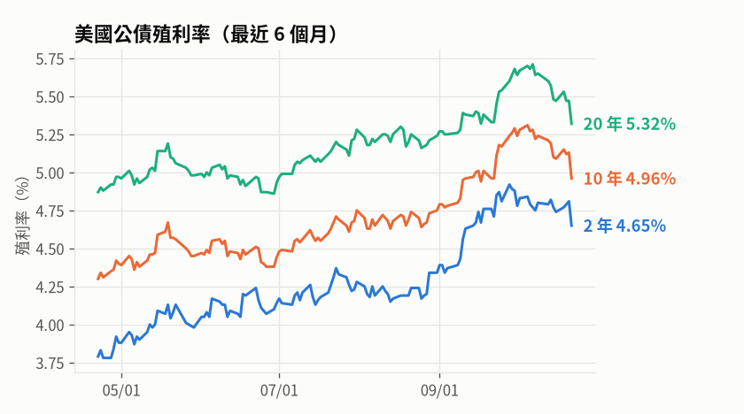

🌍 國際市場 2026-10-23（五）
每個市場收盤時間不同：台灣傍晚整理時，美國是前一個交易日的收盤，日本、韓國是當天的收盤（每列都有日期）。漲跌是和前一個交易日比；走勢圖是最近 6 個月。
國際股市


| 名稱 | 收盤 | 漲跌 | 漲跌% | 近 1 月 | 近 3 月 | 今年以來 | 日期 |
|---|---|---|---|---|---|---|---|
| 道瓊工業指數 | 52,867.98 | +11.89 | +0.02% | +1.9% | +1.2% | +10.0% | 10/22 |
| 標普500指數 | 7,663.43 | -93.74 | -1.21% | -1.3% | +2.2% | +11.9% | 10/22 |
| 那斯達克指數 | 26,008.86 | -694.00 | -2.60% | -4.5% | +1.2% | +11.9% | 10/22 |
| 日經225指數 | 62,907.84 | -1,713.40 | -2.65% | -3.2% | -4.9% | +25.0% | 10/22 |
| 韓國KOSPI指數 | 5,533.77 | -201.89 | -3.52% | -21.1% | -18.6% | +31.3% | 10/22 |
原物料


| 名稱 | 收盤 | 漲跌 | 漲跌% | 近 1 月 | 近 3 月 | 今年以來 | 日期 |
|---|---|---|---|---|---|---|---|
| WTI原油 | 99.47 | +2.32 | +2.39% | +5.2% | +14.6% | +73.2% | 10/22 |
| 布蘭特原油 | 113.17 | +4.35 | +4.00% | +14.0% | +20.3% | +86.0% | 10/22 |
| 黃金 | 4,060.4 | -89.60 | -2.16% | -7.2% | -2.2% | -6.5% | 10/22 |
單位：美元（原油每桶、黃金每盎司）；期貨近月連續合約，換月時價格會跳一下。
債券價格


| 名稱 | 收盤 | 漲跌 | 漲跌% | 近 1 月 | 近 3 月 | 今年以來 | 日期 |
|---|---|---|---|---|---|---|---|
| 長天期美債ETF(TLT，20年以上) | 81.74 | +1.50 | +1.87% | +0.0% | -2.0% | -6.2% | 10/22 |
| 短天期美債ETF(SHY，1~3年) | 81.52 | +0.23 | +0.28% | +0.2% | -0.4% | -1.6% | 10/22 |
債券 ETF 的價格和殖利率反方向：殖利率上升時債券價格下跌。長天期債券對利率變化比較敏感，漲跌幅較大。
美國公債殖利率

| 年期 | 殖利率 | 日變化（基點） | 近 1 月（基點） | 日期 |
|---|---|---|---|---|
| 2 年 | 4.65% | -16 | -6 | 10/22 |
| 10 年 | 4.96% | -17 | +0 | 10/22 |
| 20 年 | 5.32% | -15 | -1 | 10/22 |
10 年減 2 年利差：+0.31 個百分點，長天期利率較高（正常）。1 基點 = 0.01 個百分點。
❗ 執行問題
- 美國經濟指標有 11 項讀取失敗（聯邦基金利率、CPI年增率、核心CPI年增率、PCE年增率、核心PCE年增率、失業率、非農新增就業、初領失業救濟金、零售銷售月增率、GDP成長率、密大消費者信心），沿用上次的資料
資料來源：Yahoo Finance（指數、期貨、ETF）、美國財政部（公債殖利率）、聖路易聯準銀行 FRED（經濟指標）
點表格的欄位名稱可以排序（再點一次反過來）
※ 依固定規則整理的盤後資料，僅供參考，不構成投資建議